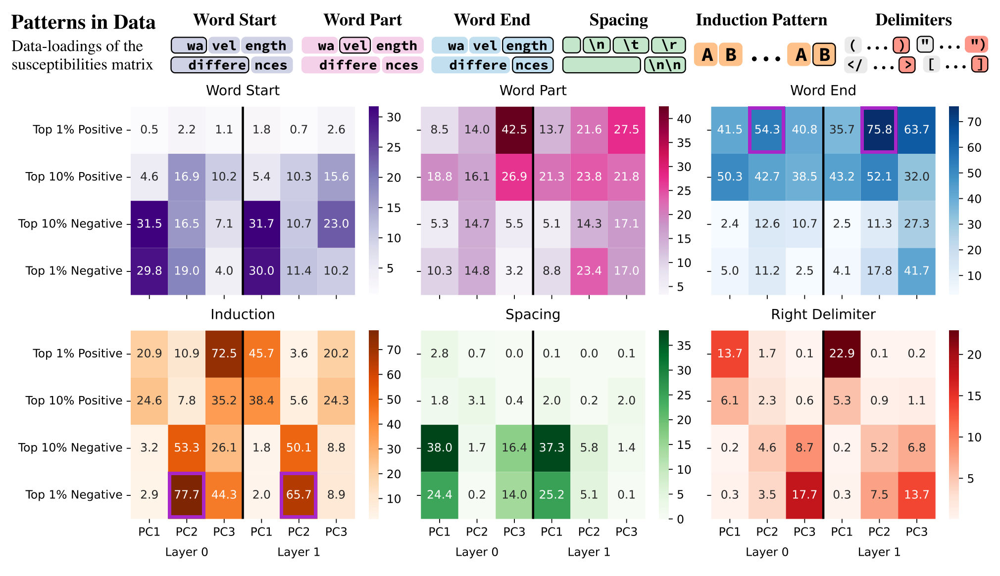
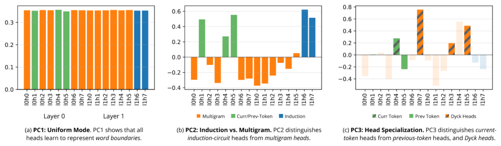

Empirical SLT: LLC Estimation, Susceptibilities, and Structural Inference
This is the second set of my informal notes on SLT; the first set is Singular Learning Theory: Basics, and the same disclaimer applies. These are informal notes I originally sketched on my iPad while reading a variety of sources on SLT; any errors are mine, or transcription errors by Claude, which I asked to turn my handwritten notes and figures into this interactive page, so there may also be some notational clashes. Since I spent so much time writing these notes, this transcription is primarily meant for self-reference, and I'm making it public in case it is helpful to anyone else. Much of it may be rewriting things that seem obvious, but that is just the way I wrote stuff down explicitly and thought about things.
Last time, this time
Last time (Part 1, Singular Learning Theory: Basics):
- we defined the RLCT and the LLC;
- why SLT? It explains phenomena like phase transitions and other deep learning phenomena that are not explainable using classical setups (Part 1, Section 7.3).
This time:
Use the local learning coefficient we estimated as an observable to understand how the internal structure of a model depends on its training data. Susceptibilities provide a first order response of structural coordinates (attention heads, etc.) to shifts in the data distribution.
- $L_n(w)=-\frac1n\sum_{i=1}^n\log p(x_i|w)$ is now the empirical loss, i.e. the average negative log-likelihood. In Part 1, $L_n$ was the log-likelihood $\sum_i\log p(x_i|w)$, so $L_n$ here is $-\frac1n L_n$ there, and Part 1, Eq. (1) reads
$$L_n(w)=K_n(w)+S_n .$$This is the convention of Watanabe [Wat13], of [LLC23] and of [Bak25].
- $L(w)=-\E_q\log p(y|x,w)$ is the population loss ($-\ell(w)=K(w)+S$ in Part 1). From on, the data are pairs $(x,y)\in\X\times\Y$ and the model is $p(y|x,w)$.
- The prior is $\varphi$ (as in $\varphi(w)$ and $\varphi_\gamma$); an observable is $\phi$ (as in $\phi_C$). $\lxy(w)=-\log p(y|x,w)$ is the loss on a single sample; it is not the $\ell(w)$ of Part 1.
- $\eps$ is the SGLD step size (in Part 1 it was the KL-sublevel threshold).
- Some letters do double duty, because they follow the papers: $U$ is the neighbourhood of $\ws$ in and the set of frozen parameters from on (and the matrix of left singular vectors in ); $\beta$ is the inverse temperature, and also a mode index in ; $\gamma$ is the localization strength, and also names a mode in ; $C$ is a component, $\Cc$ the conditional distribution and $\mathbf C$ the coupling matrix in ; $d$ is $\dim W$ in and indexes probe distributions afterwards.
Estimating the LLC
We can compute $\lhat_U$ using just $L_n$ and sampling around.
The estimand
Let $\ws\in W$ be a local minimum (not necessarily global). This allows us to estimate $\lhat_U$ at any basin (suboptimal ones or mid training). Since $\ws\in W$ is local, $K_n(\ws)\ge 0$ (only $0$ at a global minimum).
Recall (Part 1, Section 7.2, Eq. (30)) that for a neighbourhood $U\ni\ws$
where $K_n(U)$ is the best empirical loss in $U$ (this was $\hat K_n(U)$ in Part 1), i.e. $K_n(\ws)$. Recall also from that
Therefore
which gives
Now $L_n(\ws)=-\frac1n\sum_{i=1}^n\log p(x_i|\ws)$ is computable, but $\Fn(U)=-\log\Zn(U,1)$ is not:
(The second slot is the inverse temperature introduced in ; for now it is $1$.)
Building the restriction to $U$ into the prior
But we need to actually estimate stuff, so we need to sample. We can't do this over $U$, so build the restriction into $\varphi$: replace
a Gaussian bump of width $1/\sqrt\gamma$ around $\ws$. Then
But $\Zn(U,1)$ is a $d=\dim W$ dimensional integral, and so we can't evaluate it. We need to estimate using Monte Carlo.
Introducing $\beta$
For reasons we won't go into, we cannot sample from $\Zn(U,1)$ using MCMC. So introduce a hyperparameter $\beta$,
and differentiate with respect to $\beta$:
Derivationthe $\beta$-derivative of the free energy is an expectationexpand
so, writing $Z(\beta)=\Zn(U,\beta)$,
So
Moreover
since $Z(\beta)=\int_W e^{-n\beta L_n(w)}\varphi_\gamma(w)\dd w$, so normalizing by $Z(\beta)$ gets us $1$. So
where the expectation is against
Now if we draw $w_1,\dots,w_T\sim\pig$, the law of large numbers gives
Which $\beta$?
Going back to the original estimand (Eq. ), at inverse temperature $\beta$
so
But we originally wanted $\beta=1$, i.e. $\Fn(U,1)=nL_n(\ws)+\lhat_U\log n$. Compare this with : we ask for the derivative at inverse temperature $\beta$ to reproduce the free energy at $\beta=1$,
So this is not an identity between a free energy and its derivative: it says $\partial_\beta\Fn(U,\beta)\approx\Fn(U,1)$ when $\beta=1/\log n$. This is Watanabe's WBIC [Wat13].
The estimator
Now substituting and , at the $\beta$ of , back into ,
where
This is the estimator of [LLC23].
We can compute $\lhat_U$ using just $L_n$ and sampling around.
Sampling with SGLD, and what $\beta$ and $\gamma$ do
How to sample from $\pig$? This is where SGLD comes in! In particular
since $Z(U,\beta)$ has no $w$ dependence. Sample using SGLD:
- $n\beta$ is the weighting of the loss. $\beta\to\infty$: only care about loss steps, never leave $\ws$. $\beta\to0$: completely ignore $L_n$, i.e. ignore the model, the prior dominates.
- $\gamma$ is the weight confining to $U$.
$\gamma$ keeps the $w_t$'s in $U$ by:
1If $w_t$ hits a flat direction, then $\gr L_n(w_t)=0$ along that direction, and so it would wander super far away from $\ws$ without a $\gamma$ correction. See (flat direction): an example with degenerate directions, the ellipsoid of Part 1, Figure 2 with a $\kappa=0$ eigenvalue, and SGLD wandering away.
2$\gamma$ keeps the chain in the basin defined by the local minimum of interest (, two basins).
Have to pick $\gamma$ large enough to constrain to $U$ but small enough to allow for exploring $U$ (: high $\gamma$ means no exploration).
In practice. Sweep $\gamma$ and find the range of $\gamma$ where $\lhat$ does not depend on it.
Susceptibilities
The big picture
Use the local learning coefficient we estimated as an observable to understand how the internal structure of a model depends on its training data. Susceptibilities provide a first order response of structural coordinates (attention heads, etc.) to shifts in the data distribution,
This section follows Structural Inference: Interpreting Small Language Models with Susceptibilities, Baker et al. [Bak25].
The principal components of the matrix of susceptibilities are identified with patterns in the data, while the loadings (right singular vectors) are identified with structure in the model. Build a bridge between structure in data and structure in models.
Setup. Standard learning problem $(p,q,\varphi)$ setup as earlier (Part 1, Section 2).
Perturbing the data distribution
Note that we work with tempered posteriors everywhere (recall from the estimation section, ):
These are annealed posteriors, using $L(w)$ instead of $L_n$. This is purely theoretical, and in practice we use the standard tempered posterior from earlier (Eq. ) with $L_n(w)$.
Now the core question: how does the model change if we perturb the underlying data distribution from $q$ to $q_h$, $h$ small?
- $q(x,y)$ is a probability distribution on $\X\times\Y$;
- $h$ ranges over an interval of $\R$ containing $0$;
- $q_h(x,y)$ is also a probability density on $\X\times\Y$;
- assume $h\mapsto q_h$ is differentiable.
We can now define all the things we defined using $q$ using $q_h$ instead. In particular
is the negative log-likelihood for $q_h$, and can be used to define a corresponding annealed posterior
We will primarily work with $h\in[0,1]$ and
where $q'$ is another density on $\X\times\Y$ and $q_h$ interpolates between them. See .
Observables and susceptibilities
Let $\phi:W\to\R$ be an observable. We consider the expectation
Note. $h=0$ is just the unperturbed model. We want to examine how this observable changes with respect to $h$.
$\chi$ is the susceptibility of $\phi$ to the perturbation $q_h$ at inverse temperature $\beta$.
A nice lemma allows us to actually compute susceptibilities.
where
[Bak25, Lemma 2.3] For the standard $q_h=(1-h)q+hq'$,
where $L(w)=L^0(w)$ is the unperturbed loss, using $q$, and $L'(w)=L^1(w)$ is the perturbed loss, using $q'$.
The lemmas allow for computation of the susceptibility in terms of the unperturbed posterior.
Components
Remember that the models are parameterized by weights $w\in W$. We pick a subset of weights of interest, called a component $C$. We do this because looking at the covariance with respect to individual weights is far too noisy.
$C$ could be a particular attention head, i.e. $W_O,W_V,W_Q,W_K$ of that attention head.
Formally a component is a decomposition $W=U\times C$, where $U$ is the set of parameters not in $C$, that are held frozen.
The observable
Recall that the LLC at a local minimum $\ws\in W$ is given by
where $\E^\beta_{w|\ws,\gamma}$ is the expectation against $\pig$ of .
Derivationthe rearrangement of terms that gets this expression from the estimand we had earlierexpand
Start from , written with the expectation in place of the sample average, and use $\beta=\frac1{\log n}$ (Eq. ):
since $L_n(\ws)$ is a constant and can be moved inside the expectation.
Now the $\lhat(\ws)$ above is the LLC for the unperturbed $q$. For a $q_h$, we just need to take expectations with this instead, i.e. the losses change:
Finally, we are only interested in the $w$ in the component $C$ of interest. Since $W=U\times C$, we can write $w=(u,v)$ with $u\in U$, $v\in C$ for all $w\in W$. Then
Now differentiate with respect to $h$ at $h=0$. There are two places where $h$ enters, the posterior and the observable, so the product rule gives two terms:
So $\chi$ (, for the observable below) is one of two terms in $\partial_h\lhat$, not all of it. This is what [Bak25, Appendix D.3] means by “related to”.
So we set
where $W=U\times C$.
Note that here $L(w)$ and $L(\ws)$ have no $h$ dependence, it's the unperturbed $L$. The dependence on $h$ above was to motivate the interpretation of $\phi_C$ as the rate of change of the LLC (it is one of the two terms in ).
Write $E(w)=L(w)-L(\ws)$ for the excess loss, and treat $\delta(u-\us)$ as restricting the posterior to the slice where only the weights of $C$ move, so that $\phi_C=E$ and all expectations below are over that slice. There $L=E+\text{const}$, so by and
where $b$ is the slope of the perturbed loss $L'$ against $E$ over the posterior. The volume scaling $\mathrm{Vol}(\eps)\propto\eps^{\lambda}$ of Part 1, Eq. (28) makes $n\beta E$ approximately $\mathrm{Gamma}(\lambda_C)$ distributed, with $\lambda_C$ the LLC refined to $C$. So $\langle E\rangle_\beta\approx\lambda_C/(n\beta)$, which is , and $\mathrm{Var}_\beta(E)\approx\lambda_C/(n\beta)^2$. Therefore
The LLC sets the magnitude, the slope sets the sign.
In the linear case $L'(w)-L'(\ws)=b\,E(w)$, the second term of is $\frac{1}{n\beta}(b-1)\langle E\rangle_\beta\approx-\frac{\lambda_C}{(n\beta)^2}(1-b)$, and the two terms cancel: the posterior for $q_h$ is just the posterior for $q$ at inverse temperature $\beta\big(1+h(b-1)\big)$, and $\lhat$ does not depend on the temperature. So the refined LLC can be constant while $\chi\neq0$.
Per-token susceptibility
In practice we use the per-token susceptibility.
The per-token susceptibility of $C$ for $(x,y)\in\X\times\Y$ is
where $\lxy(w)=-\log p(y|x,w)$.
$x$ is a sequence of tokens (the context) and $y$ is a single token.
This is the same susceptibility formula (, ) with
the perturbed distribution is just a point mass on $(x,y)$. We check the covariance of
- The excess loss from perturbing the weights of $C$. Here the loss is just the unperturbed population loss.
- How much worse does the model with weights $w$ do on $q'$ (here upweighting $(x,y)$) than on the training distribution $q$.
Estimation
Just as in the previous section (), where we learned how to estimate the LLC, the key here is, given a local minimum $\ws$, to sample chains $w_t$ from a posterior in the neighbourhood of $\ws$.
Just as in the LLC estimator, the loss landscape is hiding here in the posterior we draw from for SGLD.
In particular, use SGLD to draw $w_t$ using the same procedure as earlier (), with the parameters not in $C$ held frozen ().
1Compute $L_n(w_t)-L_n(\ws)$. This is the $\phi_C(w)$ component.
2Compute $\lxy(w_t)-L_n(w_t)$. This is the $L'(w)-L(w)$ component.
Then $\chi^C_{(x,y)}(\ws)$ is $-1$ times the covariance between 1 and 2.
In the full estimator of [Bak25, Eq. (24)] the covariance is written out as $-\langle\phi\,\Delta L\rangle+\langle\phi\rangle\langle\Delta L\rangle$: the paired product and $\langle\phi\rangle$ use the chain restricted to $C$, while the $\langle\Delta L\rangle$ factor is taken from a separate, unrestricted chain.
Expression and suppression
So the criterion is $b_{xy}>1$ for expression and $b_{xy}<1$ for suppression, and $b_{xy}=0$ ($\lxy$ uncorrelated with $E$) already gives $\chi>0$. Both readings of $\chi>0$ below are covered: “does not have a correlated effect” is $b_{xy}\approx0$, and “$\lxy(w)$ went down” is $b_{xy}<0$. The covariance in is negative in both cases only because of the $-L$.
Since $L=\E_q[\lxy]$, the average of $b_{xy}$ over $q$ is $1$: the average token is the reference. Degrading $C$ raises the loss of the average token with slope $1$; $C$ expresses $x\rightsquigarrow y$ when the loss of this token rises faster than that. This is also what is implicitly appealing to.
| Sign | Name | Covariance | Slope | Reading |
|---|---|---|---|---|
| $\chi<0$ | Expression | $\Cov\big(\phi_C,\ \lxy-L\big)>0$ | $b_{xy}>1$ | On average, the draws of $w$ where $L(w)-L(\ws)$ is worse than normal are also where $\lxy(w)-L(w)$ is higher than usual. |
| $\chi>0$ | Suppression | $\Cov\big(\phi_C,\ \lxy-L\big)<0$ | $b_{xy}<1$ | On average, draws where $L(w)-L(\ws)$ is higher than usual don't really correlate with $\lxy(w)-L(w)$ being higher than usual. (Uncorrelated, $b_{xy}\approx0$, is already enough; anticorrelated, $b_{xy}<0$, is more so.) |
$C$ expresses the fact that context $x$ should be continued by $y$. Perturbations of the weights of $C$ that increase the population loss more than usual correlate with perturbations that make $y$ less likely to be predicted given $x$. $C$ is susceptible to the pattern $x\rightsquigarrow y$.
$C$ is not susceptible to the pattern $x\rightsquigarrow y$. Perturbations of $\ws$ that degrade $C$ more than usual do not have a correlated effect on predicting $y$ given $x$.
Note that $\chi=-\Cov[\,\cdot\,,\cdot\,]$.
$\chi<0$: expression, negative susceptibility. Perturbing $\ws\rightsquigarrow w$:
1$\lxy(w)-L(w)$ is positive, so predicting $y$ given the context of $x$ is less likely.
2$\delta(u-\us)\big(L(w)-L(\ws)\big)$ is also high, i.e. the overall population loss increases by perturbing only the weights of $C$.
$\chi>0$: suppression, positive susceptibility. Perturbing $\ws\rightsquigarrow w$:
1$\lxy(w)$ decreases compared to $L(w)$.
2$\delta(u-\us)\big(L(w)-L(\ws)\big)$ goes up. So though I messed up the weights of $C$, $\lxy(w)$ went down. $C$ was not involved in the continuation of $x$ by $y$.
The interpretation above requires separating off the term in $\chi^C_{(x,y)}$ that does not depend on $(x,y)$ and only considering the summand that does. These are called standardized susceptibilities.
Susceptibilities for Structural Inference
The main object of study is the following.
Let $\{C_j\}_{j\in H}$ be a finite set of components (e.g. all attention heads) with associated observables $\phi_j:=\phi_{C_j}$, and let $\{q^d\}_{d\in D}$ be a finite set of data distributions (which we use to define $q^d_h=(1-h)q+hq^d$). $\{q^d\}_{d\in D}$ is called the probe set and its elements $q^d$ are called probe distributions. Define the $|D|\times|H|$ matrix
where $\hat\chi^d_j$ is the estimated susceptibility of component $C_j$ to the probe distribution $q^d$.
Now the whole point is that we can learn about the internal structure of the model by looking at the structure of $X$ (e.g. by SVD and PCA, as in this paper [Bak25], or by clustering rows of $X$, as in the follow-up Towards Spectroscopy paper [Gor26]).
To justify this we define modes of data, understanding the structure of the data.
$X=\mathbf C\mathbf P$. $\mathbf C$ can be thought of as couplings between probes and modes, i.e. how much does the probe $q^d$ activate the various modes. $\mathbf P$ is the susceptibilities to the modes.
Modes
The framework of modes is from [CM25]; the presentation here follows [Gor26, Appendix B]. In this section $\alpha,\beta$ index modes; this $\beta$ is not the inverse temperature ().
Hilbert space of maps from contexts of length $k$ to $\R^\Sigma$
Fix a finite alphabet $\Sigma$ and consider the Hilbert space
of functions from contexts $x\in\Sigma^k$ (a context of length $k$) to vectors on $\Sigma$ (i.e. $\R^\Sigma$), with inner product
Here $\langle f(x),g(x)\rangle$ is the dot product in $\R^\Sigma$, and it is averaged, weighted by how often a context $x$ occurs.
The conditional $q(y|x)$ is an element of $\Hil$ defined as follows:
The canonical basis for $\Hil$ is just $\langle E_{yx}\rangle_{y\in\Sigma,\,x\in\Sigma^k}$, where $E_{yx}$ is a $|\Sigma|\times|\Sigma^k|$ (tokens $\times$ contexts) matrix with a $1$ at row $y$, column $x$ and $0$ elsewhere. We want to rescale to make it orthonormal, since
So rescale by $q(x)^{-1/2}$ to make the orthonormal basis $\big\langle q(x)^{-1/2}E_{yx}\big\rangle_{y\in\Sigma,\,x\in\Sigma^k}$.
Weight contexts inversely to their frequency (as determined by $q$) so that any analysis captures actual structure rather than just frequencies.
Inner product on $\R^{\Sigma^k}$ and the token basis
We can express the above as follows. Denote by $V=\R^{\Sigma^k}$ the free vector space generated by contexts $x\in\Sigma^k$. Define
(Again: weight contexts inversely to their frequency, as determined by $q$, so that any analysis captures actual structure rather than just frequencies; .)
Now let $\langle-,-\rangle$ be the standard inner product on $\R^\Sigma$, and define for $x\in\Sigma^k$
Define $y\circ\xh:\Sigma^k\to\R^\Sigma$, an element of $\Hil$, by
The orthonormal basis we had earlier was $q^{-1/2}E_{yx}$, so to match we have that
is the same basis as $\langle q^{-1/2}E_{yx}\rangle$. We call this the token basis of $\Hil$.
But this token basis is hard to find structure in.
The mode basis
We want to actually find patterns in the data (i.e. $q\in\Hil$) and express $\Hil$ in that basis. So we SVD the matrix $\Cc\in\Hil$. Observe that, from the discussion above, $\Cc:\R^{\Sigma^k}\to\R^\Sigma$ is expressed in the token basis. Applying SVD we get
- $U$: the left singular vectors $u_\alpha$, the continuation patterns. Write the pattern $\alpha$ as tokens.
- $S$: how strong is $\alpha$. $\tilde s_\alpha$: how common is $\alpha$ in $q$.
- $V^\top$: the right singular vectors $v_\alpha$, the context patterns. Write $\hat x\in\Sigma^k$ as a sum of common patterns.
- In the sum, $u_\alpha$ is the continuation pattern $\alpha$ and $\vh_\alpha$ is the context pattern $\alpha$.
Index the right singular vectors by $\Lambda$ and the left singular vectors by $\Lp$. Extend $\Lp$ to a basis of $\R^\Sigma$, and call the orthonormal basis constructed $\Lpp\supseteq\Lp$. Note that the $u_\alpha$, $\alpha\in\Lp$, span $\mathrm{range}(\Cc)\subset\R^\Sigma$, so $\Lp$ are the continuation patterns that are predictable from contexts, but $\R^\Sigma$ contains all token directions, and many might not be a continuation of any context actually encountered in $q$.
There is an asymmetry here. On the context side nothing has to be extended: $\Lambda$ indexes all the right singular vectors, so it already includes the kernel of $\Cc$, which arrives for free from the spectral theorem on $\Cc^{*}\Cc$. On the token side we have to extend by hand, from $\Lp$ to $\Lpp$. The two are mirror images:
- the kernel ($\alpha\in\Lambda$ with $\tilde s_\alpha=0$): contexts that behave identically;
- the extension ($\beta\in\Lpp\setminus\Lp$): tokens the data never distinguishes.
Both are where we expect $\chi_{\alpha\beta}\approx0$.
Define a basis $\{e_{\alpha\beta}\}_{\alpha\in\Lambda,\,\beta\in\Lpp}$ of $\Hil$ as follows:
This is called the modes basis.
The SVD of $\Cc$ extracts the “structure” of the data distribution $q$, and the modes basis expresses stuff in terms of this structure.
Propensities
Propensities are the change of basis coefficients between the token and modes basis.
The propensity is
Derivation$\langle y\circ\xh,e_{\alpha\beta}\rangle_\Hil=e_{\alpha\beta}(x)(y)$expand
where $u^{*}_\beta(y)=\langle u_\beta,y\rangle$.
This gives
Given a context $x$ and a continuation $y$, we say $(x,y)$ excites mode $\alpha$ if, when we write in the modes basis
the diagonal term $s_{\alpha\alpha}(xy)$ dominates. This says that:
1the context $x$ is an $\alpha$ pattern;
2$y$ is a continuation the $\alpha$ pattern predicts.
If $x$ looks like an $\alpha$ pattern but $y$ is not a continuation consistent with $\alpha$, we get the off diagonal term $s_{\alpha\beta}(xy)$ being large.
Note none of this is a statement about the model, this is purely a statement about structure in the data distribution. Susceptibilities connect this structure in data to structure in the model.
Susceptibilities in the modes basis
We can express the excess loss used in the per-token susceptibilities () in terms of the modes basis.
where
This is literally applying the change of basis from the token basis to the modes basis to $\Delta L=L'(w)-L(w)$ (), where in this case $L'(w)=\ell_{xy}(w)$ was a single sample ().
Taking the covariance with the observables $\phi_C$ gives us $\chi_{xy}$ in the modes basis.
[Gor26, Lemma B.3] We can write the per-token susceptibility of as
where $\chi_{\alpha\beta}\in\R^H$, with entries
is the susceptibility of component $C$ to the mode pair $(\alpha,\beta)$ (context $\alpha$, continuation $\beta$). And
is a recentering term for stuff that does not depend on $x,y$.
The decomposition above is useful when, for a given sample $(x,y)$, the propensity profile (the decomposition into modes, i.e. what modes does $(x,y)$ activate) is sparse, which requires:
1$x$ aligns with only a few patterns $v_\alpha$, so the context $x$ is clearly explained (if there were many $v_\alpha$'s that aligned with $x$, it's ambiguous as to what pattern (if any) explains $x$);
2$y$ aligns with a few continuation patterns $u_\beta$, so the continuation is unambiguously described by pattern $\beta$;
3the diagonal term dominates, i.e. $s_{\alpha\alpha}(xy)\gg s_{\gamma\delta}(xy)$ off the diagonal: $y$ following $x$ is explained by pattern $\alpha$. This is the same intuition as .
If we had an oracle and got access to $q(y|x)$, we could SVD $\Cc$, get the propensities $s_{\alpha\beta}(xy)$, and invert :
Going back to practice
Before this excursion, we had the response matrix ()
and we wanted to justify looking at the PCA / SVD of $X$. But lets us rewrite
- The index $d$: this is the $q^d$ perturbation (the lemma was for the per-token susceptibility; here it's the susceptibility to a perturbation $q^d$).
- The index $j$: only the component $C_j$ weights. In the lemma above, $\chi_{xy}$ for all $j\in H$ was a vector in $\R^H$.
This gives
where $\mathbf C$ is a $|D|\times|\Lambda||\Lpp|$ matrix with entries $c^{\,d,\alpha\beta}$, and $\mathbf P$ is a $|\Lambda||\Lpp|\times|H|$ matrix with entries $\chi_{\alpha\beta,j}$ [Bak25, Appendix D.5].
The coefficients of $\mathbf C$ are the propensities, with the centering already inside: $c^{\,d,\alpha\beta}$ comes from the mode decomposition of $\Cc^{d}-\Cc$, the conditional for $q^d$ minus the one for $q$ [Bak25, Definition D.2], and for a single token that is exactly the $s_{\alpha\beta}(xy)-\delta_{\alpha\beta}\tilde s_\alpha$ of . So $\mathbf C$ can be thought of as couplings between probes and modes, i.e. how much does the probe $q^d$ activate the various modes. $\mathbf P$ is the susceptibilities to the modes.
- $\mathbf C$: token basis to modes basis.
- $\mathbf P$: response of the model to modes.
There are two different centerings around, and it is worth separating them:
Empirical Results
Small language models (Baker et al. 2025)
They [Bak25] look at a small 3M-parameter transformer trained on the Pile. The GPT-2 tokenizer is truncated to get $|\Sigma|=5000$. Each layer $l\in\{0,1\}$ has 8 attention heads that are taken as components. They take 20,000 samples from each of the 13 Pile subsets, 260,000 in total. Computing per-token susceptibilities on this gets
Now do PCA on $X^l$. Then the principal components are identified with patterns in the data (the $\mathbf C$ factor in $X=\mathbf C\mathbf P$, ), while the loadings (right singular vectors) are identified with structure in the model. Build a bridge between structure in data and structure in models.


PC1. Uniform response across all heads (loadings).
PC2. On the data side (principal components, ), 77% of the $(x,y)$ tokens that are most strongly negative (top 1%, layer 0) are ascribed to induction, while a similar portion of the most strongly positive samples are word ends.
On the model side (loadings, ), l0h1, l0h4, l0h5, l1h6, l1h7 are positive while the others are negative. Therefore
Now $\hat\chi^{C_j}_{x_iy_i}<0$ since the principal components corresponding to $(x_i,y_i)$ are $\ll0$ while the $C_j$ loadings are $>0$. So $\{\texttt{l0h1},\texttt{l0h4},\texttt{l0h5},\texttt{l1h6},\texttt{l1h7}\}$ express induction patterns (in the sense of ): they are responsible for the induction circuit.
In contrast,
so the induction heads suppress word endings (and with the signs flipped, the non-induction heads express them).
To make any rigorous circuit claims, the actual raw distributions of the susceptibilities are required, not just a sign analysis. Remember expression / suppression is all relative; in raw numbers $\hat\chi_{ij}>0$ even for induction $C_j$, it is just way way smaller compared to the other heads (somehow least suppressive $\approx$ most expressive).
Towards spectroscopy (2026)
Here [Gor26] they examine Pythia-14M. They build $X$ using 780,000 $(x,y)$ samples and the $\phi_C$ observables for 32 attention heads:
They now cluster rows of $X$ instead of PCA (like in the predecessor). My guess is that this is likely because an SVD of $X$ would recover at most 32 modes in the data, and it seems likely that at the scale of Pythia-14M, models have way more interesting modes.
Recall the modes basis (purely derived from the data) tells us how $xy$ and $x'y'$ are related, by looking at the modes they activate. Let
be the propensity (expressing $xy$ in the modes basis). This is an injective map:
But we may have $s(xy)\approx s(x'y')$ even if $xy\ne x'y'$, if $x$ and $x'$ share similar context patterns and $y$ follows $x$ for the same reason as $y'$ follows $x'$. By the decomposition we saw in ,
So if $xy$ is similar to $x'y'$ in the sense that their propensity profiles are similar, we have
Similar $xy$, $x'y'$ elicit similar first order responses.
Conversely, if the model has not learned a particular mode $\gamma$ (i.e. $\chi_{\gamma\gamma}\approx0$, so no response to $\gamma$) and the distinction between $xy$ and $x'y'$ lies in mode $\gamma$ (the propensity profile only differs here), the model cannot distinguish them and $\chi_{xy}\approx\chi_{x'y'}$ despite their patterns being distinct.
Clusters. If $\chi_{xy}\in\R^{32}$ and $\chi_{x'y'}\in\R^{32}$ are assigned to the same cluster, then likely:
1Data side. $s_{\alpha\alpha}(xy)$ and $s_{\alpha\alpha}(x'y')\gg0$. They share a propensity: they activate the same mode.
2Model side. The model has learned this mode, i.e. $\|\chi_{\alpha\alpha}\|\gg0$.
Empirical findings. Refer to the paper [Gor26] for details on the clustering.
1Context sensitivity. The same token $y$ is in multiple clusters, depending on the continuation pattern that is most appropriate.
"*" is in C15 and C57, where the context is multiplication (the modes activated, $\alpha$, are to do with math). "*" is also in C504, where the context is markdown formatting (modes $\gamma$ to do with formatting).
2Functional grouping. $y,y'$ distinct but in the same cluster: $y$ follows $x$ and $y'$ follows $x'$ for the same reason.
$\{\texttt h,\texttt u,\texttt y,\texttt o\}$ are all in the same cluster when they follow a multiplication operator.
The paper finds other patterns of interest.
A given token $x$ often activates multiple SAE features. But a pair $(x,y)$ only belongs to one susceptibility cluster.
Limitation, since a single sample $(x,y)$ likely activates a bunch of modes (similar patterns) and this is thrown away.
Back to Part 1: Singular Learning Theory: Basics.
References
- [Wat13]S. Watanabe. A widely applicable Bayesian information criterion. Journal of Machine Learning Research 14 (2013), 867–897. jmlr.org Theorem 2: the free energy formula $F=nL_n(w_0)+\lambda\log n-(m-1)\log\log n+R_n$. WBIC: $\E^\beta_w[nL_n(w)]$ at $\beta=1/\log n$ approximates the free energy, which is the argument of Sections 2.3 and 2.4.
- [LLC23]E. Lau, Z. Furman, G. Wang, D. Murfet, S. Wei. The Local Learning Coefficient: A Singularity-Aware Complexity Measure. arXiv:2308.12108, 2023. The local free energy; the estimator $\hat\lambda(\ws)=n\beta\big[\E^\beta_{w|\ws,\gamma}L_n(w)-L_n(\ws)\big]$ with $\beta=1/\log n$, the Gaussian localization $\gamma$, and SGLD sampling.
- [Bak25]G. Baker, G. Wang, J. Hoogland, D. Murfet. Structural Inference: Interpreting Small Language Models with Susceptibilities. arXiv:2504.18274, 2025 (ICLR 2026). Susceptibilities, Lemmas 2.2 and 2.3, the observable $\phi_C$, per-token susceptibilities, expression and suppression, the response matrix and $X=CP$, the 3M-parameter experiments.
- [Gor26]A. Gordon, G. Baker, G. Wang, W. Snell, S. van Wingerden, D. Murfet. Towards Spectroscopy: Susceptibility Clusters in Language Models. arXiv:2601.12703, 2026. Token and modes bases, propensities, Lemmas B.2 and B.3, the inversion formula, clustering on Pythia-14M, comparison with SAE features.
- [CM25]Z. Chen, D. Murfet. Modes of Sequence Models and Learning Coefficients. arXiv:2504.18048, 2025. The framework of modes: SVD of the conditional distribution with the $q(x)^{-1}$ inner product.